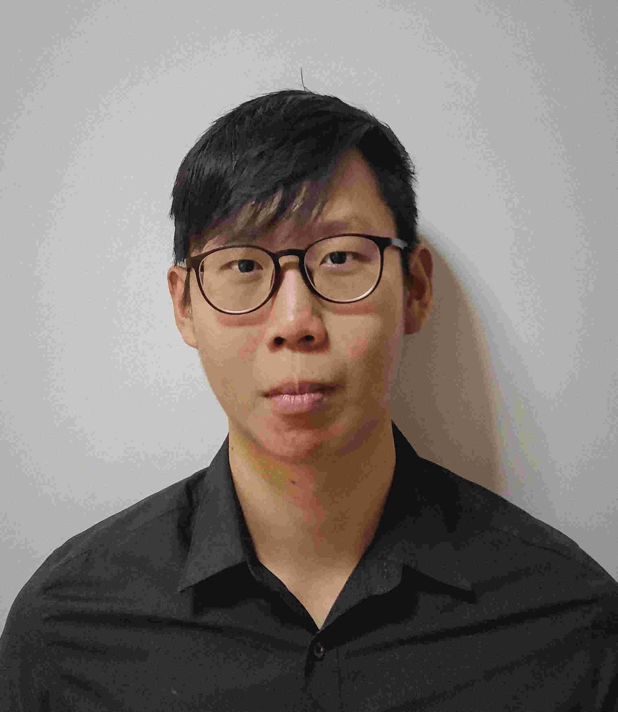

Balyasny Asset Management
Artificial Intelligence Engineer
Working as an AI Engineer at a global multi-strategy hedge fund, applying machine learning and AI techniques in a quantitative finance context.

Hi, I'm Yee Yang — an engineer, tinkerer, and lifelong learner who loves to build products, tools, and explore new technologies. I am currently an AI Engineer at Balyasny Asset Management, applying cutting-edge AI and deep learning to solve complex problems in quantitative finance.
My goal in life is to learn as much as I can, solve challenging problems, and achieve meaningful goals. I happen to hold a PhD in Electrical and Electronic Engineering (Deep Learning, Computer Vision) from NTU Singapore.
I am most skilled in Deep Learning, Large Language Models (LLM), and toothbrushing.
Machine Learning & AI: Deep Learning · Computer Vision · Large Language Models · ML Deployment · Data Analysis · Quantitative Research
Tools & Frameworks: PyTorch · HuggingFace · Docker · Cloud Computing
Coding: Managing Claude Code · Codex · Claw
Other: Data Scraping · Management Consulting · Financial Modelling
Alongside my interests in AI and engineering, some of my other interests and hobbies are: